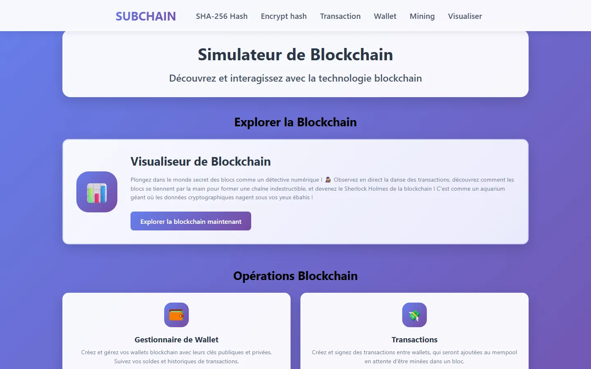
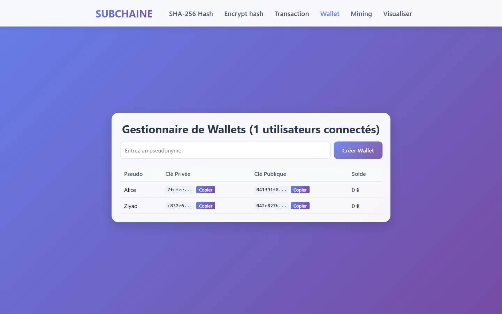
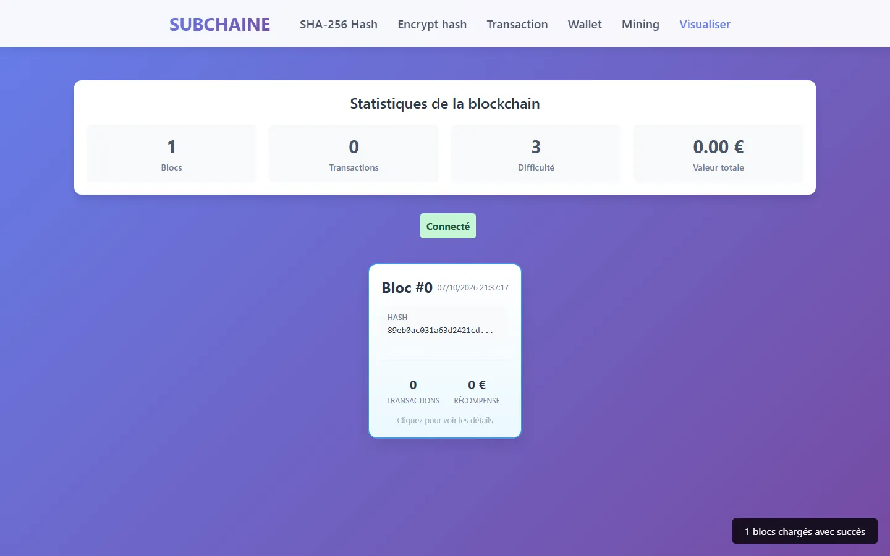

ÉcoleMaster Sciences et Technologies du Métavers, 2025
SUBCHAINE
Un simulateur pour comprendre une blockchain en la manipulant.
Créer un portefeuille, signer une transaction, miner un bloc, et voir la chaîne se construire en direct. Le but : rendre visibles des notions qu'on comprend mal en lisant.

Ce qu’on peut faire
- Portefeuilles
- Générer une paire de clés sur courbe elliptique.
- Transactions
- Les signer, puis vérifier la signature.
- Minage
- Preuve de travail et arbre de Merkle.
- Visualisation
- La chaîne qui se construit en temps réel avec Socket.IO.

